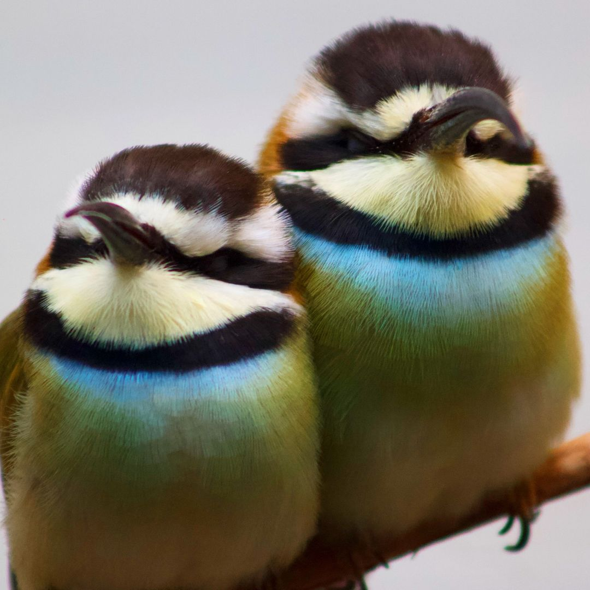
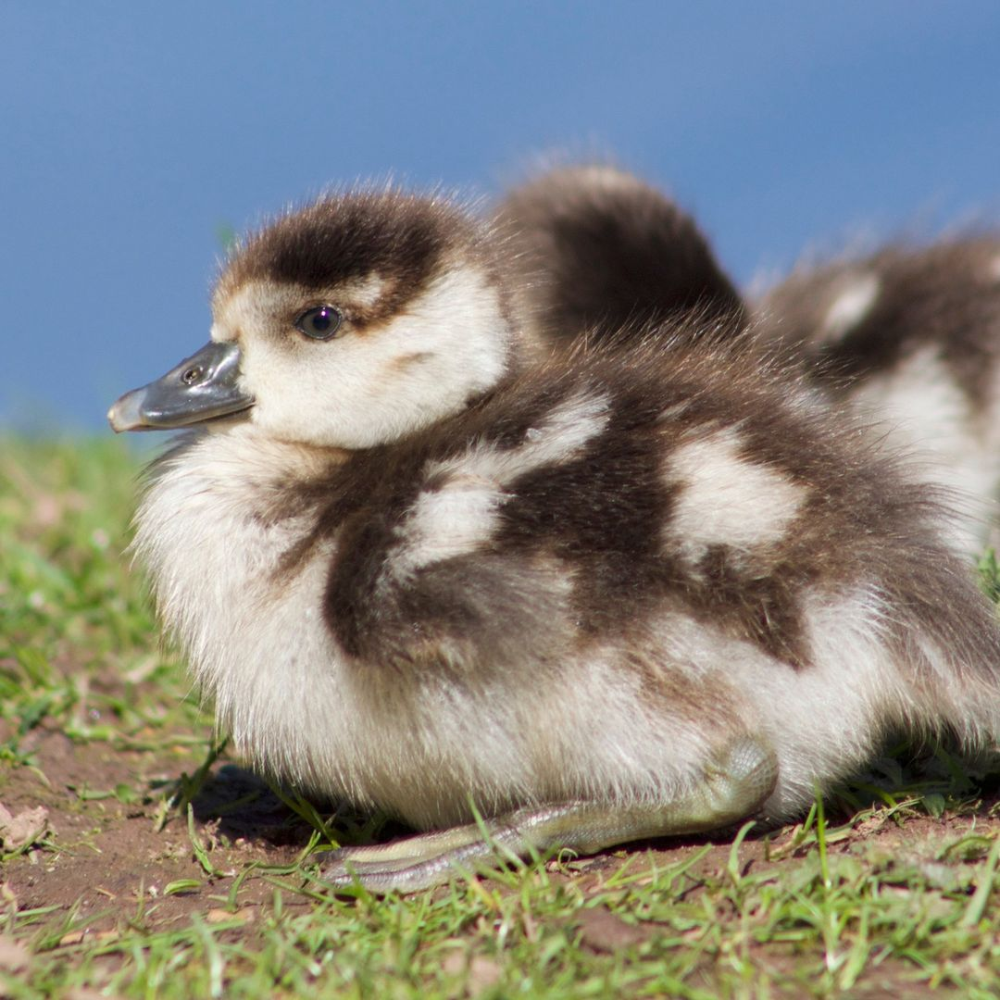

Photography
As an amateur hobby, I enjoy taking pictures of the beautiful cities, landscapes, and animals (mostly birds) that I see. I post my photos regularly to my personal Intagram account, but here's a collection of some of my favorites!
 


Project Ignite
President (2017-2018); Vice President of Communications (2016-2017); Project Advisor (2015-2017,2018-2019)
Website
Project Ignite is a student organization at CMU, whose goal is to engage local high school students in project-based learning. Every year, we would recruit students from Pittsburgh-area high schools to form small groups (usually 7-10 groups, each with around 3-7 students), and then each group would design and execute a project. The projects were usually ideas proposed by the students, and the students were in complete control of the project — as a project advisor (each project group had 2 or 3 project advisors, each of them CMU or Pitt students) our role was to advise the students, give guidance on project-planning, and provide necessary technical knowhow. By putting the high school students in the driver's seat, they got the experience of implementing their own vision, and got to see how topics they learned in school could be used to do real things.
I became involved with Project Ignite in my freshman year, and served as a project advisor three times: the hologram project (2016), the educational tools project (2017), and the hovercraft project (2019). I also served on the executive board for the organization, as Vice President of Communications and then as President. During this time, my duties included communicating with teachers & administrators at the high schools we worked with, running general body meetings & executive board meetings, obtaining resources & workspaces for our projects, supporting our project advisors, and planning our end-of-year project showcases.

Denver Public Schools Semantics
I first became involved with DPS Semantics when I was in elementary and middle school, when I competed in spelling bees at the local and state level (my highest achievement was placing 13th in the 2010 Colorado State Spelling Bee). After I was too old to be eligible to compete, I began working with the DPS Semantics coordinator, Bill Schaefer, to help coach students to compete in bees. I primarily assisted with the 'Summer Semantics' program, a free program Mr. Schaefer offered every summer for DPS's top spellers. In Summer Semantics, we gave our students (who are typically between 8 and 13 years old) comprehensive training in the English language, covering things like root words, common suffixes and combining forms, language-specific tips (e.g. "Latin loves 'i's, Greek loves 'o's"), vocabulary, and more. Due to this program (and Mr. Schaefer's many other efforts), DPS has dominated the Colorado State Spelling Bee in recent years: five of the last seven state champions have been DPS spellers (and summer semantics students), and ten DPS spellers have competed in the Scripps National Spelling Bee in the past decade.
When I was in high school, I also built a Daily Spelling Quiz site for our spellers to use, replacing the old daily spelling quiz system (which had to be manually updated, and which didn't automatically grade your spelling). This quiz site is sadly now defunct, but I hope to revive it at some point.